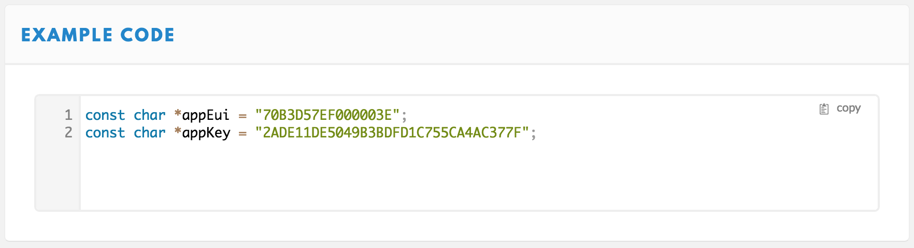
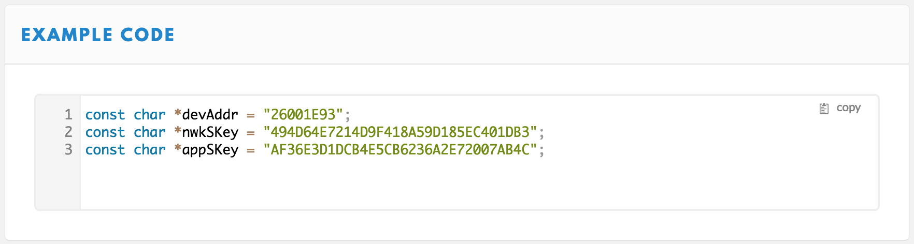

Library Usage
Outdated: this section documents The Things Network V2, which is no longer maintained. See the documentation for The Things Stack V3, or browse the V2 docs index.
Here’s how you include and use The Things Network library. Also have a look at the examples bundled with the library. You can find them in the Arduino IDE under File > Examples > TheThingsNetwork.
Include #
To use the library:
- Follow setup to install the library in Arduino IDE.
- Select Sketch > Include Library > TheThingsNetwork to include it.
Or simply copy and paste:
#include <TheThingsNetwork.h>
Initialize #
A typical sketch has the following structure:
#include <TheThingsNetwork.h>
// OTAA or ABP keys
// ..
#define loraSerial Serial1
#define debugSerial Serial
// Replace REPLACE_ME with TTN_FP_EU868 or TTN_FP_US915
#define freqPlan REPLACE_ME
TheThingsNetwork ttn(loraSerial, debugSerial, freqPlan);
void setup() {
loraSerial.begin(57600);
debugSerial.begin(9600);
// OTAA or ABP activation
// ..
}
void loop() {
// Send and receive messages
// ..
}
The actual streams you’d pass to the constructor depend on the board you use and the Serial Port you connected a LoRaWAN module to. For The Things Uno and Node use the Serial Ports and baud rates shown here. For other devices see the notes about serial ports at the end of this document.
Set the frequency plan #
The third argument for the constructor is a constant to set the frequency plan your device operates on. Replace REPLACE_ME with one of the lines below, depending on the frequency plan of your device and your country. (Click here for an overview of all frequency plans per country).
TTN_FP_EU868(Europe, Middle East, Africa)TTN_FP_US915(Americas, except Brazil)TTN_FP_AU915(Oceania, Brazil)TTN_FP_IN865_867(India)TTN_FP_KR920_923(Korea)TTN_FP_AS920_923(Japan, Singapore, Malaysia)TTN_FP_AS923_925(Southeast Asia)
Activate #
In the setup() function, after initializing the library, we have to activate the device.
There are two ways to activate your device. By default your device is registered to use OTAA. You can also personalise a device to use ABP.
Over The Air Activation (OTAA) #
For OTAA you will use the join() method with the App EUI and App Key configured for your device.
-
Right after the include for the library create constants to hold the keys:
const char *appEui = "0000000000000000"; const char *appKey = "00000000000000000000000000000000";- For
appEuiuse the Application EUI found on the device’s page in the console. Click to copy. - For
appKeyuse the App Key.
Alternatively, scroll down the device page to copy past the full snippet:

- For
-
In your
setup()function, callttn.join()with the constants you just created:ttn.join(appEui, appKey);
Your device will now try to get a confirmed activation via OTAA every 10 seconds until it succeeds.
Activation By Personalization (ABP) #
For ABP you will use the personalize() method with the device’s Device EUI, Network Session Key and App Session Key.
-
Right after the include for the library create constants to hold the keys:
const char *devAddr = "00000000"; const char *nwkSKey = "00000000000000000000000000000000"; const char *appSKey = "00000000000000000000000000000000";- For
devAddruse the Device Address found on the device’s page in the console. Click to copy. - For
nwkSKeyuse the Network Session Key. - For
appSKeyuse App Session Key.
Alternatively, scroll down the device page to copy past the full snippet:

- For
-
In your
setup()function, callttn.personalize()with the constants you just created:ttn.personalize(devAddr, nwkSKey, appSKey);
Your device will now communicate with the network using these keys.
Also see File > Examples > TheThingsNetwork > ABP.
Send #
To send messages call ttn.sendBytes() with an array of bytes and its size. Here’s an example of a loop() function that sends the current state of LED_BUILTIN every 10 seconds:
void loop() {
byte data[1];
data[0] = (digitalRead(LED_BUILTIN) == HIGH) ? 1 : 0;
ttn.sendBytes(data, sizeof(data));
delay(10000);
}
To minimise your use of the limited daily airtime try to use as little bytes as possible. See Working with Bytes for more information.
Also see File > Examples > TheThingsNetwork > Send.
Receive #
The most common Class A LoRaWAN devices - including The Things Node and Uno - can only receive the last scheduled message in response to a message they send.
For your convenience, the library has a
ttn.poll()method which sends a single byte to poll for incoming messages, if you don’t have anything particular to send.
To receive message you have to define a function and pass it to the library.
-
Add the following function to your sketch:
void message(const byte* payload, size_t length, port_t port) { debugSerial.println("-- MESSAGE"); debugSerial.print("Received " + String(length) + " bytes on port " + String(port) + ":"); for (int i = 0; i < length; i++) { debugSerial.print(" " + String(payload[i])); } debugSerial.println(); } -
Register the function in your
setup()function:ttn.onMessage(message);
Also see File > Examples > TheThingsNetwork > Receive.
Notes
Serial ports #
The RN2483 and RN2903 make use of a serial interface to communicate with your device’s main processor. Serial interfaces are similar to the RS232 serial port on older computers. The most microcontrollers have hardware Universal Asynchronous Receiver/Transmitters (UARTs) or also called HardwareSerial ports. Serial communication is offloaded to these UARTs so that the main processor does not have to waste time on this slow task. A UART can only support one serial interface at a time, and most processors only have one or two UARTs. Therefore if you already used the available UARTs to communicate with, for example, your computer and a GPS, you do not have any left for the RN2483/RN2903.
When you run out of UARTs, you can still use serial communication handled in software. In this case it is not offloaded to dedicated hardware, and the main processor needs to handle the communication. This is called Software Serial. Depending on how the software serial is implemented, you can have as many as you want, as long as you have free GPIO pins on your device. Note that not all GPIO pins support all types of software serial. Examples of software serial is the default Arduino SoftwareSerial library, and the AltSoftSerial library.
Serial communication uses high and low voltages to signal ones and zeros. The RN2483/RN2903 runs on 3.3V, which means a one is represented as a 3.3V level on the communication line, and a 0 is a 0V level on the line. Because the most Arduinos run at 5V, they expect a one to be represented by a 5V level on the line. Therefore when and Arduino sees a 3.3V signal, it causes an ambiguity. If you are lucky it works fine, but it is out of specification. To connect an RN2483/RN2903 to a 5V Arduino, you will need to include a level shifter.
Stream objects #
In the Arduino world serial ports are abstracted as stream objects. All stream objects have the same functions, even if lower down they use different physical connections (UART, SoftwareSerial, AltSoftSerial). This library does not care what you use, as long as it extends the Stream object.
The Stream objects need to be initialized at the correct baud rates at the start of your setup() function. See our examples for more details. For example:
loraSerial.begin(57600);
debugSerial.begin(9600);
TheThingsUno #
TheThingsUno is basically the same as an Arduino Leonardo with Serial1 connected to the RN2483/RN2903. Therefore if you use an Arduino Leonardo, and connect your RN2483/RN2903 to the Serial1 pins, you can use the same configuration than for TheThingsUno.
At the top of your sketch use
#define loraSerial Serial1
#define debugSerial Serial
And in your setup() function use
void setup()
{
loraSerial.begin(57600);
debugSerial.begin(9600);
...
}
SODAQ One #
At the top of your sketch use
#define loraSerial Serial1
#define debugSerial SerialUSB
And in your setup() function use
void setup()
{
loraSerial.begin(57600);
debugSerial.begin(9600);
...
}
Arduino Uno, Arduino Nano or other devices using SoftwareSerial #
The Arduino Uno only has one hardware serial port which is used to communicate over USB to the computer. When connecting an RN2483/RN2903 to the Arduino Uno, one has to make use of SoftwareSerial. If you connected the RN2483/RN2903 to the Arduino using the same pinout as described on the forum, you can make use of the following code.
At the top of your sketch use
#include <SoftwareSerial.h>
#define debugSerial Serial
SoftwareSerial loraSerial(10, 11); // RX, TX
And in your setup() function use
void setup()
{
loraSerial.begin(9600);
debugSerial.begin(9600);
...
}
SoftwareSerial does not operate correctly at high baud rates. We normally use it at 9600 baud. Because the RN2483 and RN2903 normally operates at 57600 baud, we need to switch it to 9600 baud so that we can communicate with it using 9600 baud. This is done automatically inside TheThingsNetwork Arduino library. Changing of the baud rate of the RN2483/RN2903 is not always very reliable. Power cycling the device, or a reset, might be necessary.
If you connected the RN2483/RN2903 to different pins on the Arduino, you can change the line SoftwareSerial loraSerial(10, 11); // RX, TX to specify the correct RX and TX pins (from the Arduino’s perspective).
When using the AltSoftSerial library the pins you can use for software serial is fixed according to which device you use. You therefore do not have a choice which pins to use, and you may lose some other functionality, but this library seems to be more stable than the default SoftwareSerial library. Both are however usable with TheThingsNetwork library.